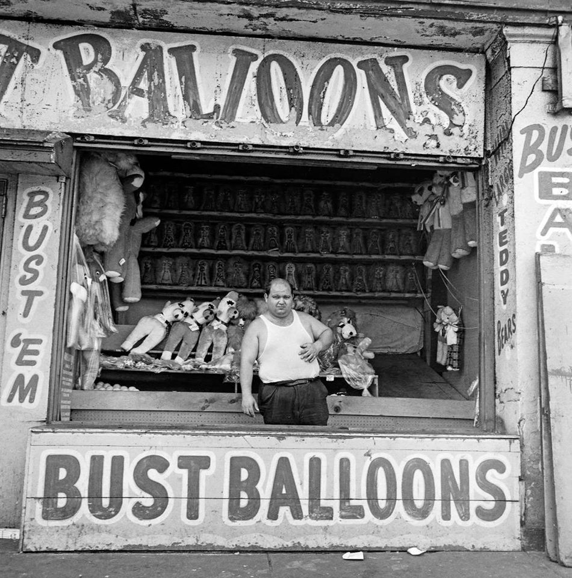
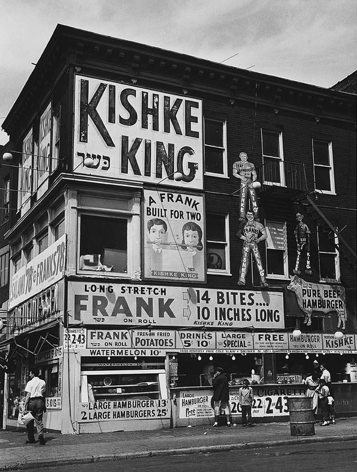
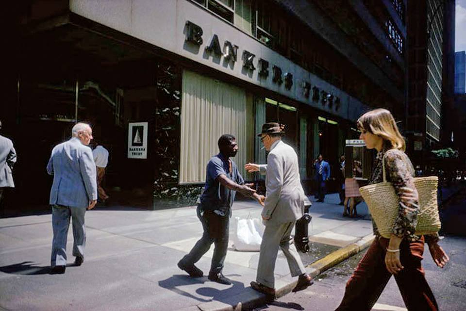
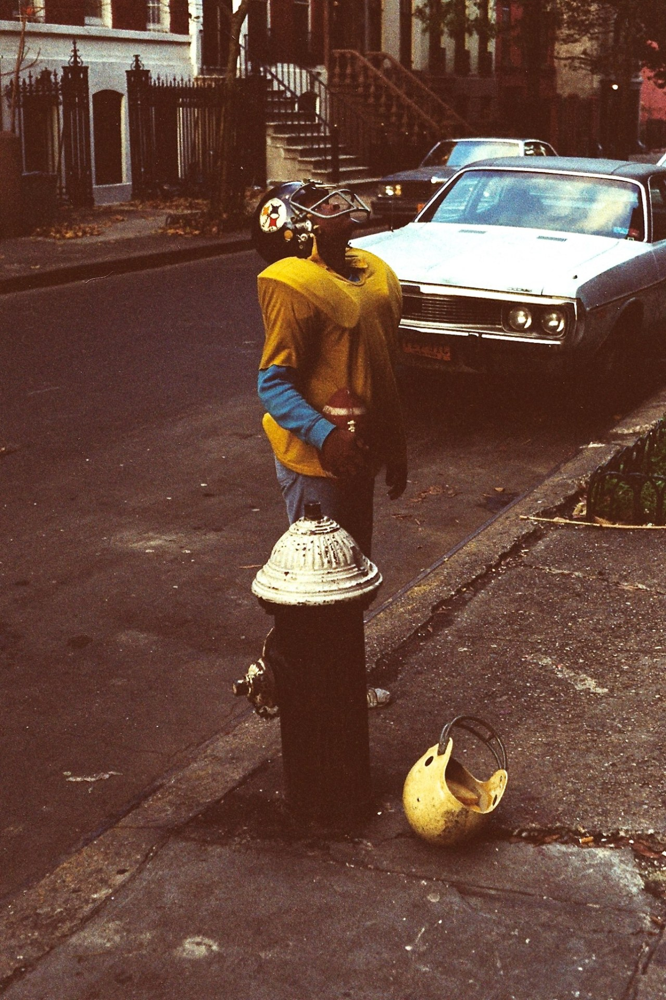
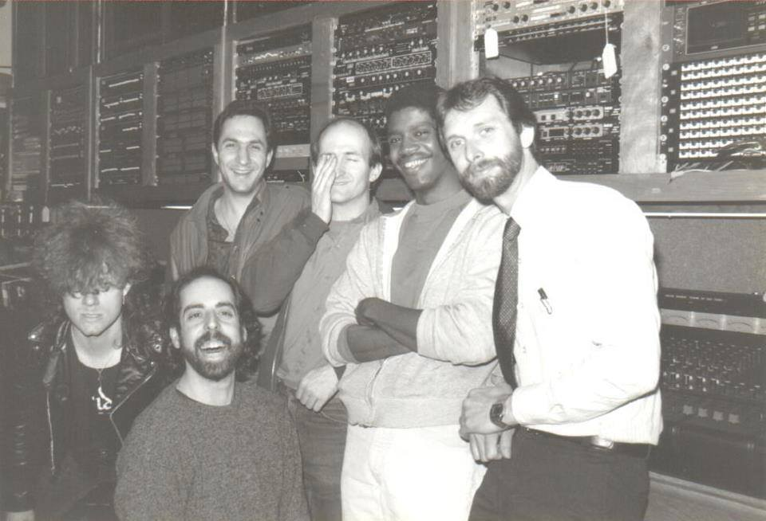
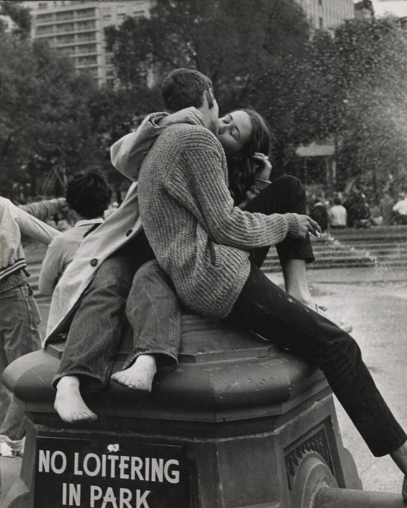
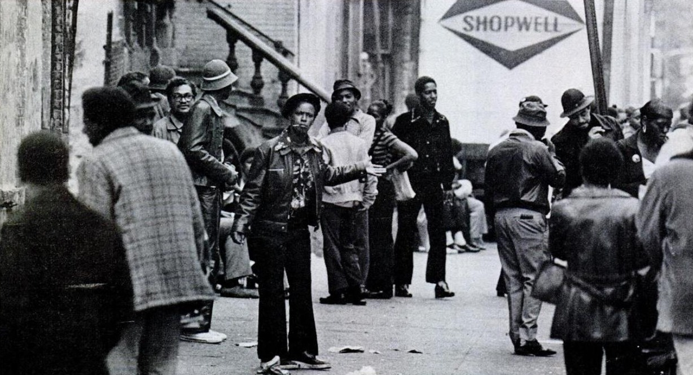
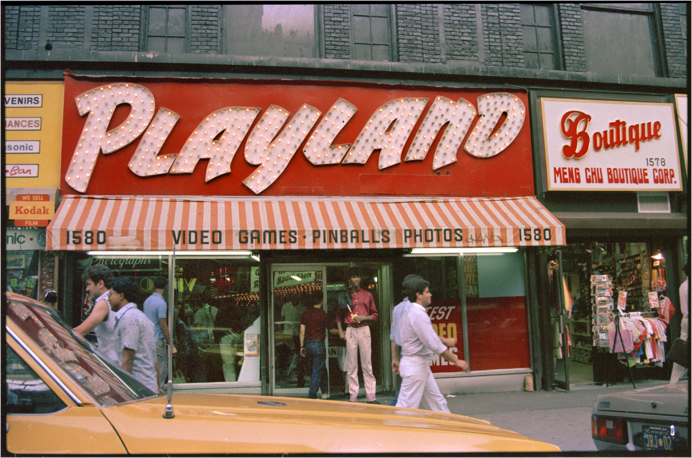

23rd and 2nd, 1980

Capri Theater, Times Square
23rd and 2nd, 1980
Capri Theater, Times Square

Central Park 1973

Classy in Coney Island, 1969

Playing stickball in Queens, 1971


Thanksgiving, 1973

The Stillers in the 70s

Pitkin Avenue, Brownsville (Brooklyn, NY)
1953
Photo: N. Jay Jaffee

Dondi working in 1980

E. 10th Street, 1982

57th and 5th, 1982

New York. The Sheep Meadow in Central Park, when the Name Actually Made Sense, circa 1900.

Topless bar in Chelsea, 1973

Sunning, 1989
Dorothy surveys Manhattan from the Brooklyn Bridge

Uncredited Photographer On the Corner, Brooklyn, New York c.1950

Primitive graffiti, 1974
E. 116th St, 1990

About to hug?
Killer Futura 2000 piece, 1980

Porn off Broadway

Young Steelers fan on the Upper West Side, 1982

Debbie Harry, New York Apartment, Back Yard, 1983

Trying to keep the City clean, 1973. (Fail.)

The Cast of “Young Frankenstein” and the director stuck with the check…

New York, 1970s
Photo by Morris Engel

Broadway and 47th Street, looking north, ca. 1978

Salesmen at Manny’s on 48th Street. An amazing music store, but the salesmen were pretty much all douchebags, unless you walked in there wearing diamonds and carrying big bags of cash. So fuck these guys.
Alphabet City, 1983

Andre Kertesz- Washington Square Park, New York City

Harlem, New York, March 1982

Astor Place in the 80s
125th Street, 1941
Uptown on Riverside Drive, 1970s

Subway food, 1974. E-coli, anyone?

Times Sq 1985

Times Square 1987